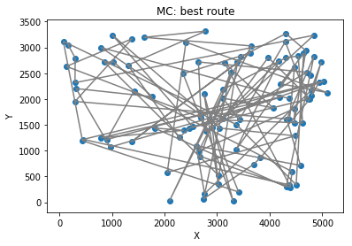
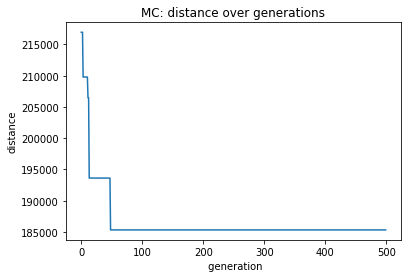
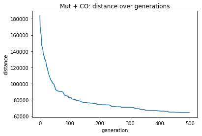

Main loops
Monte Carlo
Randomly chooses a route, checks fitness, keeps it if it is better than previous route, randomly choose new route.
old_distance = 1000000000000
my_dist = 0
distmat = np.zeros((its, 2))
for j in range(0,its):
# makes 2 vectors a and b, where b is the same as a, other than that it is shifted along 1, so that
# b[0] = a[1], a[0] is added to the end of b. In this way, the vectors form paths along which santa
# can travel.
a = np.arange(nums)
np.random.shuffle(a)
b = a[1:]
b = np.append(b, a[0])
route = np.column_stack((a,b))
# take diagonal sum of euclidian distmat
my_dist = np.trace(distance.cdist(my_data[a, 1:3], my_data[b, 1:3], 'euclidean'))
# If new distance is better than old distance, keep new distance and route
# else keep old distance and route
if my_dist < old_distance:
old_distance = my_dist
best_route = route
else:
pass
distmat[j,0] = j
distmat[j,1] = old_distance
my_dist = 0
routedata = my_data[best_route[:,0]] Plots
Plot best route
x = routedata[:,1]
y = routedata[:,2]
fig = plt.figure()
ax = fig.add_subplot(111)
ax.plot(x, y, color = 'gray')
ax.scatter(x,y)
ax.set(title = "MC: best route", ylabel = 'Y', xlabel = ' X')
plt.show()

png
Plot performance over generations
x = distmat[:,0]
y = distmat[:,1]
fig = plt.figure()
ax = fig.add_subplot(111)
ax.plot(x, y)
ax.set(title ="MC: distance over generations", ylabel = 'distance', xlabel = ' generation')
plt.show()
print('Shortest distance = ', min(distmat[:,1]))

png
Shortest distance = 185333.70354853105MUT + CO + elitist selection
Using crossover, mutation and (elitist) selection to find the best elements in the population.
# make parent 1
a = np.arange(nums)
np.random.shuffle(a)
b = a[1:]
b = np.append(b, a[0])
parent1 = np.column_stack((a,b))
# make parent 2
c = np.arange(nums)
np.random.shuffle(c)
d = c[1:]
d = np.append(d, c[0])
parent2 = np.column_stack((c,d))
# make empty arrays
offspring = np.zeros((nums,popsize))
optdistmat = np.zeros((its,2))
for i in range(0, its):
distmat = np.zeros((4,1)) # set to zero, or distances from earlier generations will be added to new generation
offspring1, offspring2 = crossover(parent1, parent2) # 2 parents produce 2 offspring using crossover
# Takes sum of diagonal of euclidian distance matrix = total distance
distmat[0] = np.trace(distance.cdist(my_data[parent1[:,0], 1:3], my_data[parent1[:,1], 1:3], 'euclidean'))
distmat[1] = np.trace(distance.cdist(my_data[parent2[:,0], 1:3], my_data[parent2[:,1], 1:3], 'euclidean'))
distmat[2] = np.trace(distance.cdist(my_data[offspring1[:,0], 1:3], my_data[offspring1[:,1], 1:3], 'euclidean'))
distmat[3] = np.trace(distance.cdist(my_data[offspring2[:,0], 1:3], my_data[offspring2[:,1], 1:3], 'euclidean'))
best = np.argmin((distmat)) # Index of shortes distance out of 2 parents & 2 offspring
# Dict to link indices to route
whatdict = {
0:parent1,
1:parent2,
2:offspring1,
3:offspring2
}
parent = whatdict[best] # best of all parents/offsprings offspring becomes new parent
distmat = np.zeros((popsize,1)) # Reset to zero
# Next, make a boolean vector to indicate whether a child is to be mutated (1) or not (0).
choice = np.random.choice(np.arange(1,100),popsize) # Vector of popsize numbers (1 - 100)
mutate = choice <= mutprob # Boolean vector, 1 if choice <= mutprob, else 0
mutate = np.repeat(mutate, 2) # Repeat so that the next for loop iterates across every element in mutate
# Array containing popsize copies of parent
offspring = np.repeat(parent, popsize, axis = 0).reshape(nums, popsize*2)
# For every unit in population (which is initially just a copy of the best of 2 parents and 2 offspring)
# See if you're going to mutate it
# If so, replace unit with mutated copy, else: leave it
for j in range(0, len(mutate),2):
if mutate[j] == True:
offspring[:, j], offspring[:, j+1] = mutate_swap2(parent, nums, swapprob)
else:
pass
distmat = np.zeros((popsize,1)) # reset distance matrix to zero
# Stick distances in array distmat
for k in range(0, popsize):
distmat[k] = np.trace(distance.cdist(my_data[offspring[:,k*2], 1:3],
my_data[offspring[:,k*2+1], 1:3], 'euclidean'))
# Indices of best route
best = np.argmin((distmat))
bestindices = [best*2, best*2+1]
# Best offspring becomes new parent1
parent1 = offspring[:, bestindices].astype(int)
# Second best offspring becomes parent 2
secondbest = np.argpartition(distmat, 2, axis = 0)[1,0]
secondbestindices = [secondbest*2, secondbest*2+1]
parent2 = offspring[:, secondbestindices].astype(int)
# Stick data in array for plotting
optdistmat[i,0] = i
optdistmat[i,1] = distmat[best]
# Reset distance to 0
my_dist = 0
routedata = my_data[parent1[:,0]]
x = routedata[:,1]
y = routedata[:,2]
fig = plt.figure()
ax = fig.add_subplot(111)
ax.plot(x, y, color = 'gray')
ax.scatter(x,y, color = 'blue')
ax.set(title = "Mut + CO: best route", ylabel = 'y', xlabel = ' x')
plt.show()
png
x = optdistmat[:,0]
y = optdistmat[:,1]
fig = plt.figure()
ax = fig.add_subplot(111)
ax.plot(x, y)
ax.set(title = "Mut + CO: distance over generations", ylabel = 'distance', xlabel = 'generation')
plt.show()
print('Shortest distance is', min(optdistmat[:,1]))

png
Shortest distance is 64563.85015021321